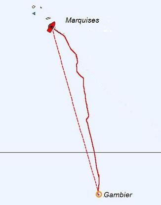
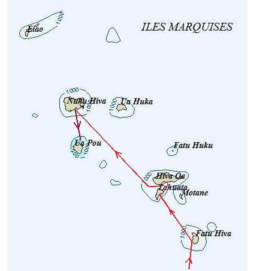
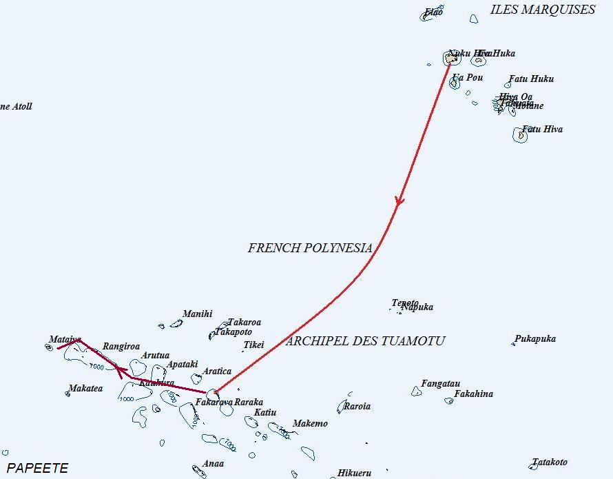
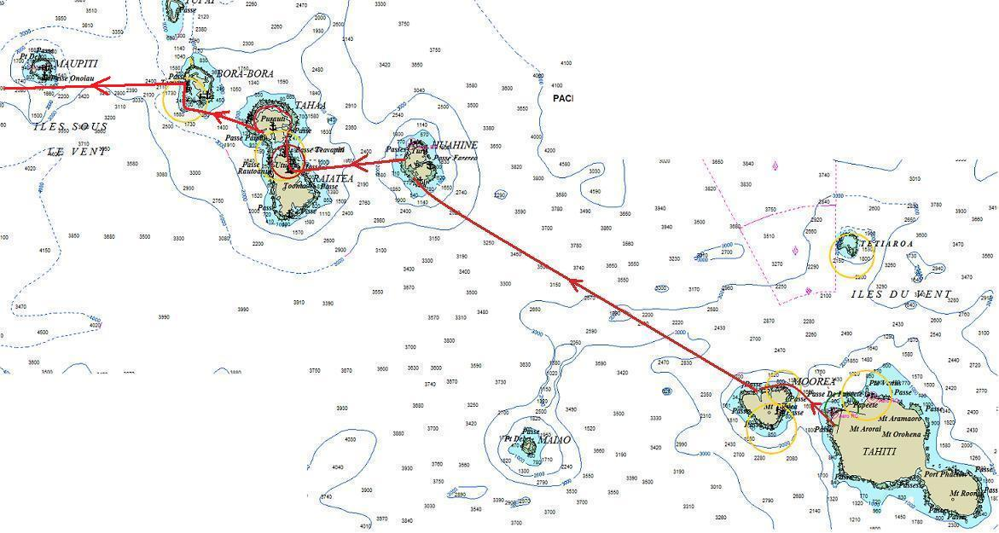

|
Gambier-Marquises. Sur ce coup-là, on a un peu tergiversé.... |
 |
|
Marquises. On les a toutes faites |
 |
|
Marquises-Tuamotu. En daar is de werk: tout droit ! |
 |
|
Iles de la société: on se promène. |
 |
| Date | Lieu | Log (nm) |
| 12/8 au 10/12 | Gambier | 5305 |
| 16/12 au 20/12 | Marquises - Fatu Hiva | 6145 |
| 21/12 au 23/12 | Marquises - Tahuata | 6195 |
| 23/12 au 26/12 | Marquises - Hiva Oa | 6205 |
| 27/12 au 3/2 | Marquises - Nuku Hiva | 6355 |
| 4/2 au 24/2 | Marquises - Ua Pou | 6475 |
| 1/3 au 7/3 | Marquises - Fatu Hiva | 6665 |
| 7/3 au 12/3 | Marquises - Tahuata | 6710 |
| 12/3 au 19/3 | Marquises - Hiva Oa | 6720 |
| 20/3 au 23/3 | Marquises - Ua HUka | 6790 |
| 24/3 au 27/3 | Marquises - Nuku Hiva | 6820 |
| 31/3 au 6/4 | Tuamotu - Kauehi | 7340 |
| 6/4 au 20/4 | Tuamotu - Fakarava | 7400 |
| 16/4 au 17/4 | Tuamotu - Faaite | 7480 |
| 21/4 | Tuamotu - Toau | 7520 |
| 22/4 au 11/5 | Tuamotu - Rangiroa | 7620 |
| 11/5 au 20/5 | Tuamotu - Tikehau | 7670 |
| 21/5 au 22/6 | Tahiti | 7850 |
| 22/6 au 29/6 | Moorea | 7870 |
| 30/6 au 2/7 | Huahine | 7950 |
| 2/7 au 7/7 | Raiatea et Tahaa | 7975 |
| 7/7 au 14/7 | Bora Bora | 8000 |
| 15/7 au 16/7 | Maupihaa | 8130 |